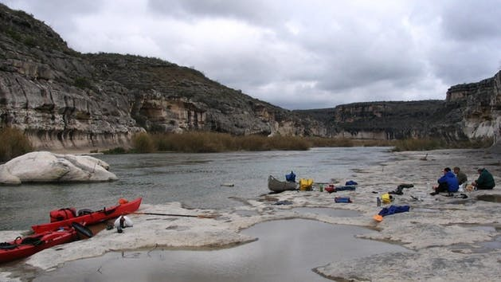
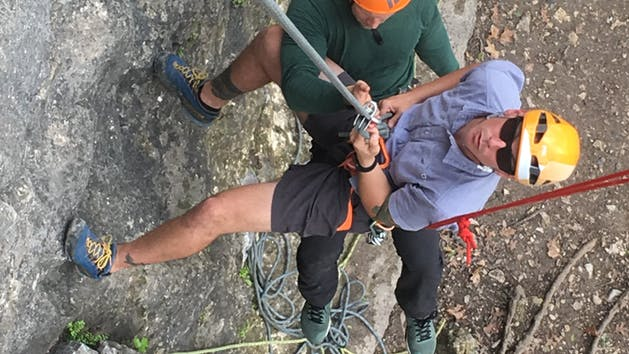

Beginner Climbing Course
Most Popular Course • From $99 per climber
A great introduction to outdoor climbing, this climbing course emphasizes safety skills, basic climbing technique, teamwork, trust, communication, and having a great time in a beautiful setting at Enchanted Rock Climbing, Reimer’s Ranch or the Austin Greenbelt.
Book Beginner Climbing Course

Boat Climbing Tour
Featured Climbing Trip • $285 starting, $95 per extra hour
All skill levels can try their hand at Deep Water Soloing (DWS) with this 3 hour tour exploring the cliffs of Austin’s Lake Travis. Climb as high as you want, enjoy the view and let the water catch you when you’re done!
Book Boat Climbing Tour

Special Courses
We have a variety of special courses available for groups, camps, boy and girl scout troops, self-rescue, and more!
Browse Special Climbing Courses